Как читать авторский курс и нормативные материалы
Это учебные материалы, а не заключение о соответствии конкретного продукта. Организационные модели курса отделяйте от терминов стандарта: ППК в опубликованном проекте — машиночитаемый перечень, а живой реестр его версий является практикой сопровождения. Термин OSA в разных материалах имеет разный охват. Статус и обязательность нормативного документа проверяются отдельно; проект КАПО опубликован как проект первой редакции.
Почему генерация SBOM — это искусство
Тезис одной фразой SBOM — это не свойство проекта, а снимок, сделанный конкретным инструментом на конкретном входе. Поэтому один и тот же продукт можно «сфотографировать» так, что он покажется чистым и простым, а можно — так, что станет виден реальный состав со всеми рисками. Разница между плохим и хорошим SBOM — это не кнопка «сгенерировать», а инженерные решения: чем сканировать, что подавать на вход, что делать с неопознанным и как проверять результат.
Почему вообще «искусство», а не «нажми кнопку»
Наивное ожидание: «есть инструмент → он выдаёт правильный SBOM». На практике правильного-единственного SBOM не существует. Запустите Syft, Trivy и cdxgen на одном репозитории — получите три разных bom.json: разное число компонентов, разная доля заполненных PURL, разный набор лицензий. Ни один из них не «врёт» — просто каждый смотрит в своё место.
Отсюда главный обман: тишина в отчёте читается как «чисто», хотя часто означает «слепо». Сканер нашёл 12 компонентов и 0 уязвимостей — это хороший продукт или плохой SBOM? Без ответа на вопрос «чем и на каком входе сгенерировано» цифра findings не значит ничего. Garbage in → garbage out: на плохом SBOM даже идеальный анализатор уязвимостей даёт ложное спокойствие.
Первый вопрос аудита SBOM Не «сколько здесь компонентов», а: чем сгенерировано, на каком входе, какой версией инструмента, что произошло с неопознанным? Пока нет этих ответов — SBOM нельзя ни сравнивать, ни доверять ему.
Плохой SBOM vs хороший SBOM
| Аспект | 🔴 Плохой SBOM | 🟢 Хороший SBOM |
|---|---|---|
| Вход | только исходники или только манифест | сборка + бинарь + манифест вместе |
| Координаты | имя без версии, нет PURL/CPE | нормализованный PURL/CPE, точная версия |
| Лицензии | сырые текстовые строки или пусто | SPDX-выражение + evidence-привязка |
| Полнота C/C++ | только #include, статика потеряна |
динамика через ELF→DEB, статика — в worklist |
| Неопознанное | молча отброшено («компонентов мало») | unresolved worklist с пониженным confidence и владельцем |
| Воспроизводимость | нет версии инструмента и входа | зафиксированы tool version, commit/tag, параметры |
| Проверка | «много компонентов = хорошо» | quality gate по покрытию PURL/license/dependencies |
| Контур | онлайн-режим, утечка кода в облако | осознанный offline/закрытый контур |
| Назначение | формальная галочка «SBOM есть» | машинный источник фактов для VDR/VEX и лицензий |
Плохой SBOM выглядит так же, как хороший: валидный JSON, открывается, проходит схему. Дефект не в синтаксисе — в полноте и точности координат, а их видно только при сознательной проверке.
Как сделать хорошо: инженерные решения
- Выбрать генератор под экосистему. Манифесты — Syft/cdxgen; образ + CVE одним шагом — Trivy; C/C++ — cdxgen с последующим обогащением. См. М05.
- Снимать с правильного входа. Манифест-скан показывает объявленное, бинарь-скан — поставленное. Полнота достигается на этапе сборки, а не поздним сканом готового артефакта.
- Обогащать, а не только генерировать. Сырой SBOM довести до качества: дотянуть PURL/CPE, нормализовать лицензии до SPDX, привязать evidence.
- Не прятать неизвестное. Каждый компонент без устойчивой координаты — в
unresolvedworklist с владельцем, а не «забыть». - Фиксировать воспроизводимость.
syft version/trivy --version/cdxgen --version, commit/tag входа и параметры — рядом сbom.json. Иначе завтра не понять, изменился проект или инструмент. - Проверять качество гейтом. Не доверять числу компонентов — мерить покрытие PURL/CPE/license и наличие dependency-связей. См. чек-лист качества CycloneDX и П34.
Один компонент решает исход
{
"name": "openssl",
"version": "3.0.11",
"purl": "pkg:deb/debian/openssl@3.0.11",
"licenses": [{ "license": { "id": "Apache-2.0" } }]
}
Здесь есть purl — анализатор найдёт CVE и лицензию. А запись { "name": "libssl", "version": null } без PURL невидима для сопоставления с уязвимостями: компонент есть в продукте, но «чист» в отчёте. Хороший SBOM — это про долю таких полных записей.
Почему в C и C++ это искусство в квадрате
В управляемых экосистемах (npm, PyPI, Maven) состав почти полностью восстанавливается из lock-файла — генерация близка к «нажми кнопку». В C/C++ без Conan/vcpkg такого манифеста нет, и каждое допущение генератора может тихо исказить картину:
#include— это не зависимость. Заголовок<openssl/ssl.h>виден компилятору, но не задаёт ни версию, ни факт линковки. Версию даёт только сборка и бинарь. См. include ≠ зависимость.- Статическая линковка — слепая зона. Код
libfoo.aкопируется в исполняемый файл и теряет границу: компонента в SBOM нет вообще, и это не ошибка снятия, а свойство сборки. См. статическая линковка. - Stripped-бинари лишены символов — бинарный анализ слепнет.
- Vendored-каталоги и внутренние форки выглядят как апстрим, но имеют другую версию и другой профиль риска.
Как сделать хорошо в C/C++ (то, что отличает зрелый процесс):

То есть: build-scan (перехват вызовов компилятора/линкера) + анализ ELF (readelf -d, DT_NEEDED) + маппинг .so → DEB (dpkg -S) → PURL + обогащение недостающих метаданных, а всё неопознанное — в worklist. Именно это делает enrichment-утилита («генератор фактов») в корпоративном кейсе М11. Подробно — модуль М09 и практики П22, П23.
Учебный вывод Хороший SBOM по C/C++ — это честный SBOM: он показывает не только то, что удалось распознать, но и явно фиксирует, что осталось нераспознанным. Плохой SBOM прячет слепые зоны за красивым числом компонентов.
Критерии «хорошего» (чек-лист)
- [ ] Зафиксированы инструмент, его версия, вход (commit/tag) и параметры запуска.
- [ ] Высокое покрытие PURL/CPE; версии нормализованы.
- [ ] Лицензии — SPDX-выражения с evidence, а не сырые строки.
- [ ] Для C/C++: динамика смаплена на DEB, статика и vendored отражены явно.
- [ ] Неопознанное — в
unresolvedworklist с владельцем и confidence. - [ ] Пройден quality gate (а не просто «JSON валиден»).
- [ ] Решён вопрос контура: что и куда уходит при генерации.
Связанные материалы
- Модули: М02 (факт vs интерпретация) · М04 (PURL/CPE) · М05 (инструменты) · М09 (C/C++)
- Нормативка качества: BSI TR-03183-2 · NTIA Minimum Elements · CISA Minimum Elements
- Практики: П34 SBOM quality gate · П04
- Шаблоны: Чек-лист качества CycloneDX · Соглашение о качестве данных SBOM